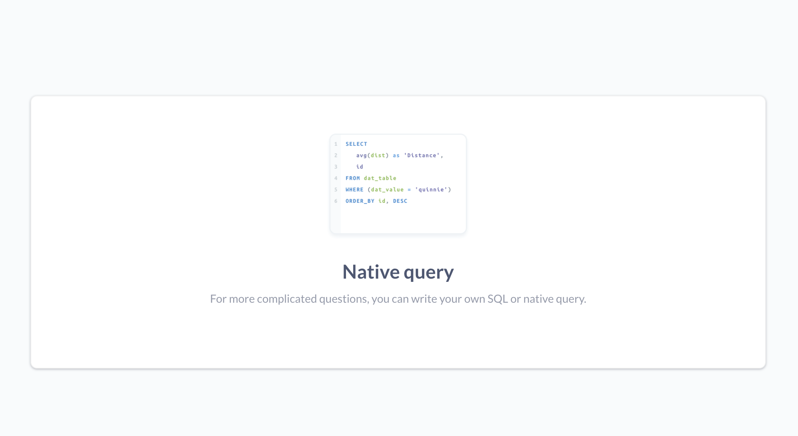
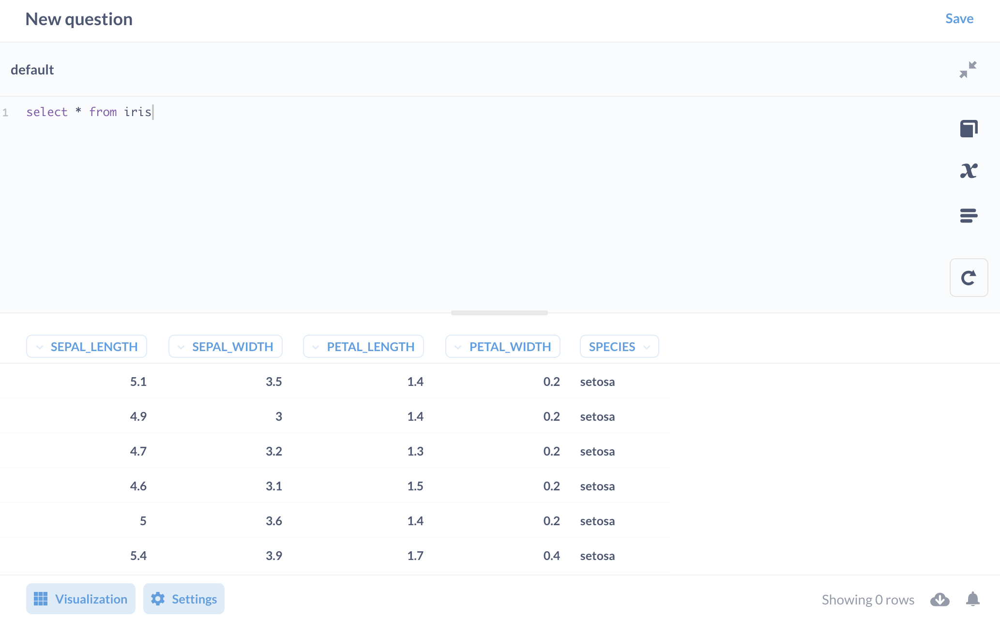

对 metabase-quick 这个工具进行简单小结。
简单来说，metabase-quick 是个命令行工具，使用 Metabase 的 UI，写 SQL分析本地的 csv 文件，并进行可视化。功能与 Metabase 一样，设置上简化了。
肝了几天，熬了几个晚上，终于有了 v0.1 MVP 版本。
使用
Releases 页面下载自己平台的二进制文件。
Releases · XUJiahua/metabase-quick
$ ./metabase-quick-darwin dataset/iris.csv
INFO: load file dataset/iris.csv in 0.00393911 seconds
You can visit database engine via below command:
mysql --host=127.0.0.1 --port=53045 default -u root
INFO: NewConnection: client 1
open http://localhost:53046
incoming query: select * from iris
会自动打开网页，点击 Native query。

写SQL，可视化，都是 Metabase 的能力。

源起
当时手头正好有份指标数据需要做对比分析，觉得可以用 Metabase 试试。但是 Metabase 还得安装到本地，进行一系列的设置：创建用户、加入一个数据源、导入数据。然后才是我想要做的数据分析！
我只是要分析一份没多大的 CSV 文件而已啊。我需要一个“用完就走”的工具。
惦记着 Metabase 的简洁美观，也没找到适合的分析 CSV 的工具，那就自己做一个吧。（可能 Excel 更合适，但一直没习惯使用。。。）
工作量分析
大体思路如下：
- 不需要考虑用户认证与权限体系。
- 复用部分前端。至于是哪部分，需要根据工作量及产出来权衡。
- 使用 Go 重写部分后端 API。至于是哪些 API 重写，由前端复用程度决定。因为是命令行工具以及跨平台，使用 Go 语言。
- Go 程序内置一个 SQL 引擎，比如 sqlite。
因为之前有过对 Metabase 魔改的经历，对 Metabase 代码是有一定熟悉度的。其实现最复杂也是对用户最有用的功能是 MBQL，在二维表格界面上交互式设置 filter、group by、新增字段等操作。简洁，交互性好。但是把这部分后端重写，特别是看到 Clojure 一团乱麻样的代码，有点头大。光看代码就得花很久。
经过调研，SQL editor 需要的后端 API 比较简单。因为是前端由用户直接写好 SQL，就没有必要在后端根据 MBQL 生成 SQL 了。SQL 直接发给 SQL 存储引擎，将数据结果交给前端即可。
修改过的前端代码使用以下 branch 维护。
是基于 v0.38.4 这个 tag，进行了部分微调，主要是禁用了一些 API 的请求，更换了首页入口。
React/Clojure 我不常用，但是通过查看前后端代码的 routes 和 middleware 代码，基本能找到关键之处。
优化空间
支持更多的 Metabase API
这样可以更大范围地复用 Metabase 前端代码。可以使用到与原版 Metabase 一样的功能。
更多的存储引擎支持
目前使用的是开源库的内存数据库。考虑到如果有大尺寸的 CSV 文件进行聚合操作，列式存储引擎的效果会更好。
缩小前端产物大小
可执行文件大小为 68M，其中 44M 是前端产物。
$ du -h frontend_client
12K frontend_client/inline_js
41M frontend_client/app/dist
792K frontend_client/app/img
656K frontend_client/app/fonts/lato-v16-latin
656K frontend_client/app/fonts
180K frontend_client/app/assets/geojson
136K frontend_client/app/assets/img/alerts
860K frontend_client/app/assets/img
1.0M frontend_client/app/assets
43M frontend_client/app
44M frontend_client
$ ls -lhS frontend_client/app/dist | head
total 83960
-rw-r--r-- 1 jiahua staff 11M Apr 23 22:54 vendor.bundle.js.map
-rw-r--r-- 1 jiahua staff 10M Apr 23 22:54 vendor.bundle.js
-rw-r--r-- 1 jiahua staff 7.0M Apr 23 22:54 app-main.bundle.js
-rw-r--r-- 1 jiahua staff 4.4M Apr 23 22:54 app-main.bundle.js.map
-rw-r--r-- 1 jiahua staff 4.1M Apr 23 22:54 0.bundle.js.map
-rw-r--r-- 1 jiahua staff 3.4M Apr 23 22:54 0.bundle.js
-rw-r--r-- 1 jiahua staff 135K Apr 23 22:54 2.bundle.js.map
-rw-r--r-- 1 jiahua staff 110K Apr 23 22:54 2.bundle.js
-rw-r--r-- 1 jiahua staff 108K Apr 23 22:54 styles.bundle.cssLast modified on 2021-04-21